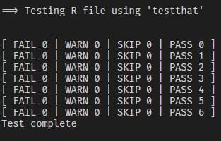

The {box} package works seamlessly with {testthat}, R’s most popular testing framework. While you can use other testing frameworks, this guide focuses on testthat because of its widespread adoption and excellent integration with RStudio.
4.1.1 Getting Started
Let us revisit the {./module} directory from what Chapter 3.1 is on about, and let us test the robustness of {./module/matrix_ops.r}, where it overloads * and ^ from base R for matrix operations. Update {./module} by creating another subfolder named __tests__/, next to your module file. The double underscores make it clear this is special infrastructure code, not a regular module.
The .on_load hook ensures tests run automatically when the __tests__ module loads. Using box::file() gives us the current directory path.
The {./module/tests/helper-module.r} file loads the namespace of the module you want to test into the test environment. In our case, we choose {./module/matrix_ops.r}:
box::use(../matrix_ops[...])
The [...] syntax attaches all exported functions, and we are applying this to make the exports of the module namespace available in tests without prefixes.
4.1.2 Making Modules Testable
Suppose you want to verify that {module/matrix_ops.r} works correctly. This script contains R source code that overloads the * operator from base R to enable intelligent matrix multiplication, and ^ to take the exponentiation of the matrices, except when ^-1, which takes the (square) matrix its inverse.
Take a look of the source code:
#' Matrix Multiplication#' #' @export`*`=function (e1, e2) UseMethod("*")`*.default`=function (e1, e2) base::`*`(e1, e2)`*.matrix`=function (e1, e2) {if (is.matrix(e1) &&is.matrix(e2)) {# Check dimensions for matrix multiplicationif (ncol(e1) ==nrow(e2)) {return(base::`%*%`(e1, e2)) } elseif (ncol(e2) ==nrow(e1)) {# Try the other way around if dimensions matchreturn(base::`%*%`(e2, e1)) } else {# If neither multiplication works, do element-wisereturn(base::`*`(e1, e2)) } } else {return(base::`*`(e1, e2)) }}# ... Truncated ...box::register_S3_method("^", "default")box::register_S3_method("^", "matrix")box::register_S3_method("^", "array")box::register_S3_method("^", "data.frame")
To make this module testable, append the following code at the bottom of {module/matrix_ops.r}:
if (is.null(box::name())) { box::use(./`__tests__`)}
and it becomes:
#' Matrix Multiplication#' #' @export`*`=function (e1, e2) UseMethod("*")`*.default`=function (e1, e2) base::`*`(e1, e2)`*.matrix`=function (e1, e2) {if (is.matrix(e1) &&is.matrix(e2)) {# Check dimensions for matrix multiplicationif (ncol(e1) ==nrow(e2)) {return(base::`%*%`(e1, e2)) } elseif (ncol(e2) ==nrow(e1)) {# Try the other way around if dimensions matchreturn(base::`%*%`(e2, e1)) } else {# If neither multiplication works, do element-wisereturn(base::`*`(e1, e2)) } } else {return(base::`*`(e1, e2)) }}# ... The rest are truncatedbox::register_S3_method("^", "default")box::register_S3_method("^", "matrix")box::register_S3_method("^", "array")box::register_S3_method("^", "data.frame")if (is.null(box::name())) { box::use(./`__tests__`)}
This conditional check distinguishes between two scenarios: when you execute Rscript module/matrix_ops.r directly from the command line, box::name() returns NULL and the test suite runs. However, when another module imports it using box::use(module/matrix_ops), the condition evaluates to false and tests are skipped.
Note
The backticks around __tests__ — R doesn’t normally allow identifiers starting with underscores, so backticks tell R to treat it as a literal name.
After that, update the {./module/tests/test-matrix_ops.r} file that contains the actual tests:
Code
# ---Matrix Multiplication---test_that('matrix multiplication works correctly', { m1 =matrix(c(1, 2, 3, 4), nrow =2) m2 =matrix(c(5, 6, 7, 8), nrow =2) result = m1 * m2 expected = m1 %*% m2expect_equal(result, expected)})test_that('matrix multiplication with dimension mismatch tries reverse order', { m1 =matrix(c(1, 2, 3, 4, 5, 6), nrow =2, ncol =3) m2 =matrix(c(7, 8), nrow =2, ncol =1)expect_error(m1 * m2)expect_error(m2 %*% m1)})test_that('matrix multiplication works with scalar', { m1 =matrix(c(1, 2, 3, 4), nrow =2) scalar =2 result = m1 * scalar expected = base::`*`(m1, scalar)expect_equal(result, expected)})# ---Exponentiation---test_that('matrix inverse (^-1) works correctly', { m =rbind(c(2, 7), c(5, -4)) result = m ^-1 expected =solve(m)expect_equal(result, expected)})# ---Solving system of linear equation---# ---An example from https://www.youtube.com/watch?v=cblHUeq3bkE---test_that('combined operations work (inverse then multiply)', { A =rbind(c(2, 7), c(5, -4)) b =cbind(c(34, -1)) result = A ^-1* b expected =matrix(c(3, 4), ncol =1)expect_equal(result, expected)})
4.1.3 Tests Execution
You have several options for running tests:
If you are using the terminal:
Rscript module/matrix_ops.r
and when all five executable tests passed the unit test, you’ll get . being tallied:
$ Rscript module/matrix_ops.r✔|F W S OK |Context⠏|0|matrix_ops✔|6|matrix_ops══ Results ════════════════════════════════════════════════════════════════[ FAIL 0 |WARN0|SKIP 0 |PASS 6 ]You rock!
This depends on what reporter argument you are placing. In this case, "progress" is chosen, because in my opinion, this is easier to read.
See Chapter 4.2 to talk about more about diagnostics.
Important
Make sure you are in the current directory where {./module} is found.
In RStudio, locate {./module/tests/test-matrix_ops.r}. Click the file, and click “Run Tests”.

Important
Don’t use RStudio’s “Source” button! It reuses the current R session, and box caches loaded modules. You might end up testing old code without realizing it. Always run tests in a fresh session to ensure you’re testing the current version of your code.
4.1.4 Testing Nested Modules
How about testing nested modules? We want modules from {./module/statistics} to be tested as well. The problem is they found deeply from the parent folder {./module}. Updating {./module/tests}, and prepare some scripts for unit testing the source code of nested scripts / folders, is a mistake. Instead, each subfolder has __tests__ to be prepared.
The testing pattern from {./module} works for nested modules, such as {./module/statistics} and {./module/statistics/models}.
Let us test both module/statistics/models/linear.r and module/statistics/models/logistic.r, for example:
module/statistics/models/
├── __init__.r
├── linear.r # ◄─── Test this
├── logistic.r # ◄─── Test this
├── __tests__/ # ◄─── Add
│ ├── __init__.r
│ ├── helper-module.r
│ ├── test-linear.r
│ └── test-logistic.r
└── baseline_logit.r
The helper-module.r file from {./module/statistics/models} adjusts the relative path: